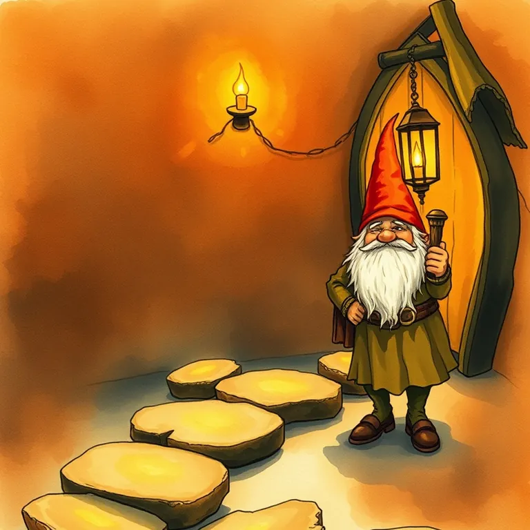

Typeform

It felt like a conversation instead of an interrogation, for a toll that assumed a real inn, not just a doorway.
Typeform is best used for building a form or survey that feels like a conversation instead of an interrogation, which meaningfully improves completion rates. A survey nobody finishes tells you nothing about the realm's needs. This format keeps travelers engaged long enough to actually answer. It lands at #33 of 51 on Solos Gems (5.3/10) for forms & surveys.
It felt like a conversation instead of an interrogation, which the traveler appreciated, right up until they realized the toll assumed a proper inn, not just a doorway to duck through.
- Value for price4.5/10
- Capability6/10
- Ease of use7/10
- Trial safety5.5/10

The one-question-at-a-time format genuinely improves completion rates over cluttered forms.
Snapshot from www.typeform.com. Scouted from the tavern doorway, not a full campaign playthrough.Best used for
Building a form or survey that feels like a conversation instead of an interrogation, which meaningfully improves completion rates.
How it helps the realm
A survey nobody finishes tells you nothing about the realm's needs. This format keeps travelers engaged long enough to actually answer.
Boons
- The one-question-at-a-time format genuinely improves completion rates over cluttered forms.
- Design quality is a clear step above most basic form builders.
- Logic branching lets the form adapt based on earlier answers.
Curses
- Longer, more complex forms take real design time to structure well in this format.
- Free tier is limited enough that meaningful use usually requires a paid step up.
Common questions
Does this work for long, detailed surveys?
Yes, though longer surveys need more careful design to avoid feeling tedious even in this format.
Can questions change based on earlier answers?
Yes, logic jumps let the form branch based on responses.
Is it better than a basic Google Form?
For engagement and completion rate, generally yes; for pure simplicity and cost, not always.